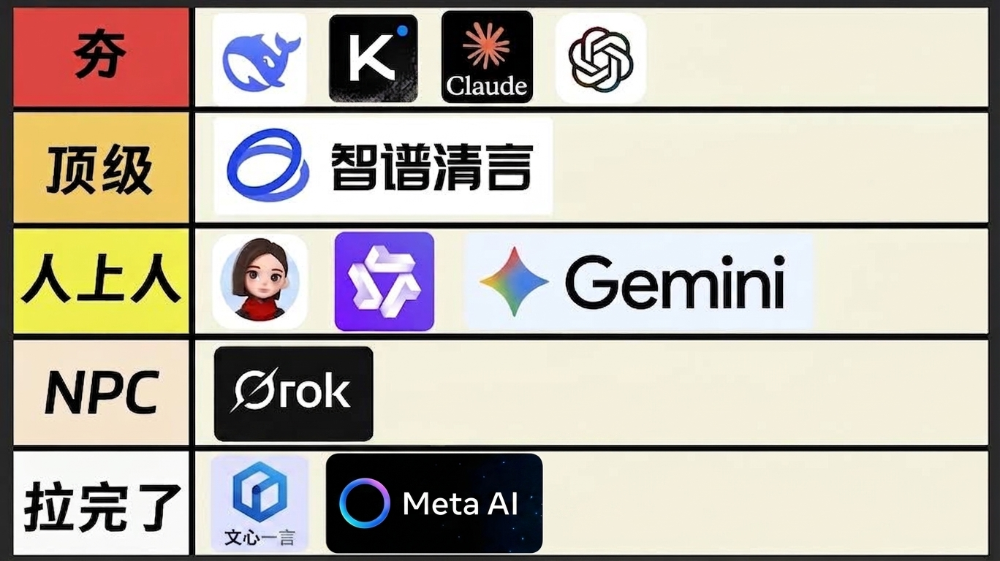
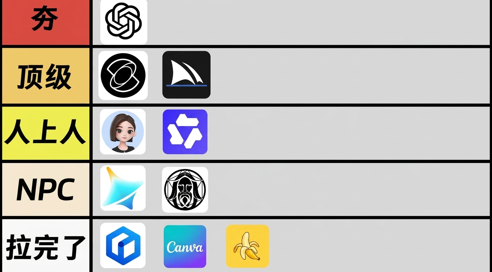
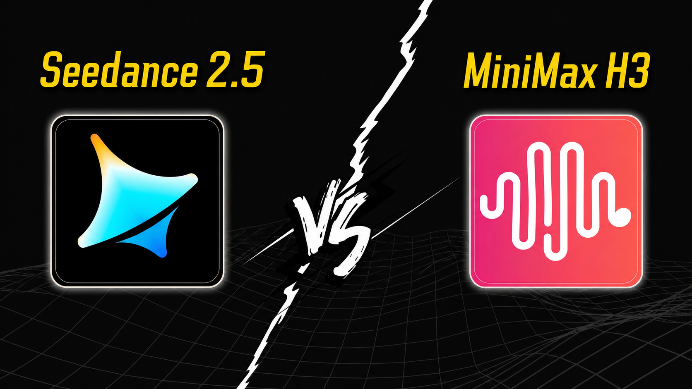
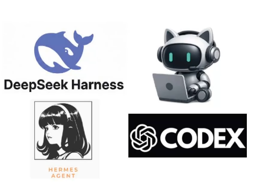

日常办公
选 WorkBuddy。它的优势是门槛低、集成顺、适合信息整理和流程自动化。
两个月之后，AI 工具排名重新洗牌

本课会沿用“夯、顶级、人上人、NPC、拉完了”的课堂表达，但会把它翻译成更清楚的选型逻辑。
距离上次分享大约两个月。先把变化讲清楚，再谈怎么选；这次不是罗列工具，而是更新一张真正能用的 AI 地图。
过去两个月，大语言模型几乎每一家都在升级。国内外头部模型之间的差距越来越小，但它们的使用体验、价格策略和擅长任务开始明显分化。
图示用于课堂引导：先让学生看到格局，再解释每一档的原因。
夯｜第一梯队
顶级
人上人
NPC / 拉完了
“这一部分大家不要只盯着榜单看。模型强不强，要放到任务里判断。比如写作、查资料、编程、长文本、调用工具，每个场景的第一名都可能不一样。我们今天的排名，是站在个人学习、内容创作和智能体接入这几个维度综合判断的。”
生图工具的变化，比大语言模型更容易被肉眼感知。这里要把“从 0 到 1 生成图片”和“修图、改图、排版”分开讲，否则学生会把不同类型的工具混在一起比较。

生图榜单重点看画质、可控性、中文提示词、修图能力和工作流完整度。
夯
顶级
人上人
NPC / 拉完了
视频工具目前已经进入“贵但能打”的阶段。能力强的模型可以直接生成更长、更清晰的视频，但价格也开始成为真实门槛。课堂上建议让学生同时关注质量、时长、分辨率、镜头稳定性和单秒成本。

完整展示 Seedance 2.5 与 MiniMax H3 的名称及图标，作为本节课视频工具部分的重点对比。
| 工具 | 课堂定位 | 主要优势 | 提醒学生注意 |
|---|---|---|---|
| Seedance 2.5 | 当下视频生成第一梯队 | 画面质量、镜头调度、动态稳定性强，可支持更高分辨率和更长视频。 | 成本较高，适合商业样片、关键镜头和高质量展示，不适合无脑批量试错。 |
| MiniMax H3 | 高性价比强竞争者 | 广告片、产品展示、声音与画面结合等场景表现突出，价格相对友好。 | 单次生成时长和调用方式要看平台限制，适合先做短片段测试。 |
“AI 视频不是谁便宜就用谁，也不是谁参数高就一定最好。你要先问自己：我要的是广告质感、人物动作、产品展示，还是只是一个氛围短片？视频工具的成本是按秒烧钱，所以先用便宜方案做分镜和试错，再用强模型做最终镜头，会更合理。”
大模型负责“脑子”，智能体负责“行动”。当模型能调用工具、读写文件、浏览网页、执行命令、沉淀技能，它就从聊天机器人进入了工作流系统。这里重点对比 DeepSeek Harness、WorkBuddy、Hermes Agent 和 Codex。

四个 Agent 的差异，不在于谁“绝对更强”，而在于它们服务的用户和场景不同。
| Agent | 核心特点 | 适合谁 | 一句话建议 |
|---|---|---|---|
| DeepSeek Harness | “一切皆插件”的可组合架构，更像轻量级 Agent 操作系统层。 | 喜欢折腾、想自己组合工具链的开发者。 | 追求开放、轻量、灵活，选它。 |
| WorkBuddy | 偏企业协作与日常办公的智能体工作台，开箱即用程度高。 | 非纯技术用户、办公自动化用户、团队协作场景。 | 要做浏览器操作、信息收集、办公流，优先看它。 |
| Hermes Agent | 强调长期记忆和技能系统，能把复杂任务经验沉淀成可复用技能。 | 想做长期个人助手、复杂链路任务和自我进化系统的人。 | 重视记忆、技能传承和长期任务，重点关注它。 |
| Codex | 面向专业开发者和工程代码场景，代码生成、调试、终端闭环成熟。 | 软件工程师、产品开发者、需要严肃工程交付的人。 | 要做重度编程和工程交付，Codex 仍然是标准答案之一。 |
选 WorkBuddy。它的优势是门槛低、集成顺、适合信息整理和流程自动化。
选 Hermes Agent。它适合持续沉淀经验、复用技能和做长期个性化助手。
选 DeepSeek Harness。它更适合极客式定制，把不同工具拼成自己的工作系统。
选 Codex。它的优势在代码仓库、终端执行、调试验证和工程化交付闭环。
短短的几个月时间，所有的 AI 工具都在升级。
那么，你有没有升级？
学习 AI，并不只是追着一个又一个新工具跑，更重要的是建立学习 AI 的思维和理念：理解它能解决什么问题，知道怎样提出需求，也愿意持续练习和更新自己。这样，当新的工具出现时，我们才能接得住、用得上；不被工具推着走，而是让它真正成为自己的生产力工具。
本部分建议切换为电脑录屏，围绕资料沉淀与个人工作流搭建展开。
本部分建议完全用电脑录屏完成：安装、配置、首次运行与接入测试，一步一步带学生走通。
涉及 API Key 时务必打码。课程中展示“从零到跑通”即可，复杂配置与高级玩法可留到后续课。
今天这节课的核心不是让大家背一张榜单，而是理解 AI 工具正在从“单点能力竞争”进入“工作流竞争”。未来真正有价值的，不是会打开多少工具，而是知道什么时候用模型、什么时候用生图、什么时候用视频，什么时候让 Agent 接管重复劳动。
“这两个月的变化告诉我们，AI 工具没有永远的第一名。今天强的工具，可能两个月后被新版本反超；今天便宜的工具，也可能因为价格调整变成高成本选择。所以大家要掌握的是判断方法：看任务、看成本、看稳定性、看生态。工具会换，但这个判断框架不会过时。”